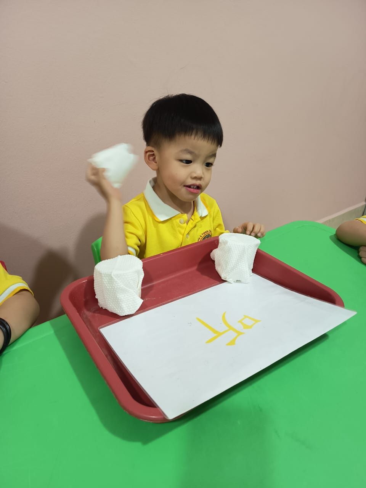
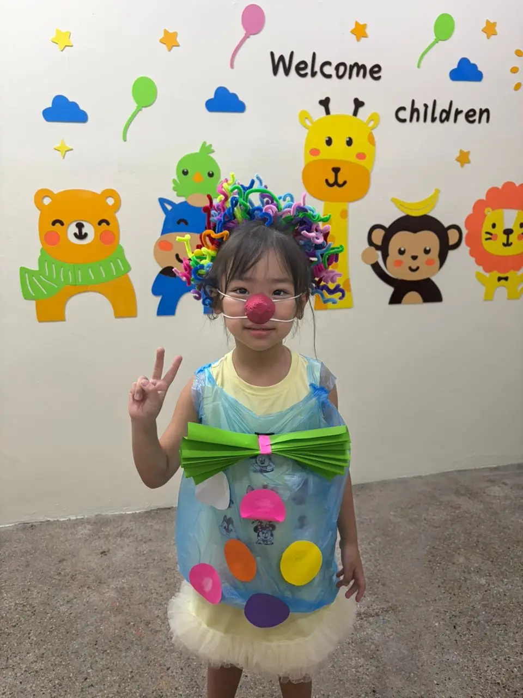
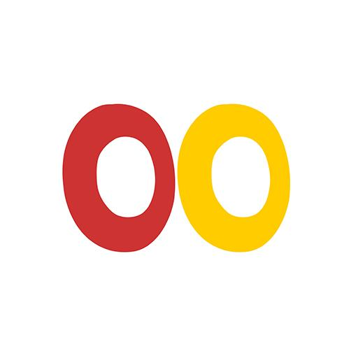
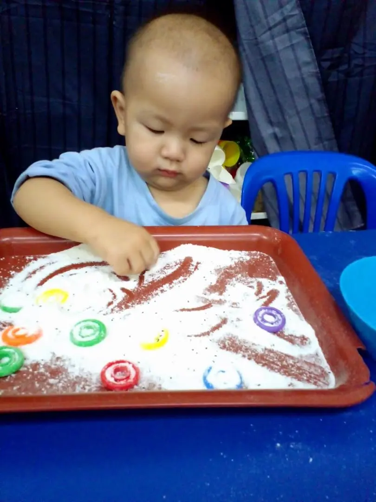
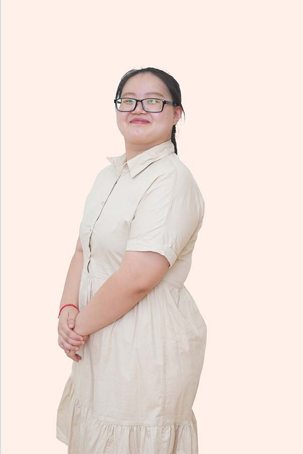
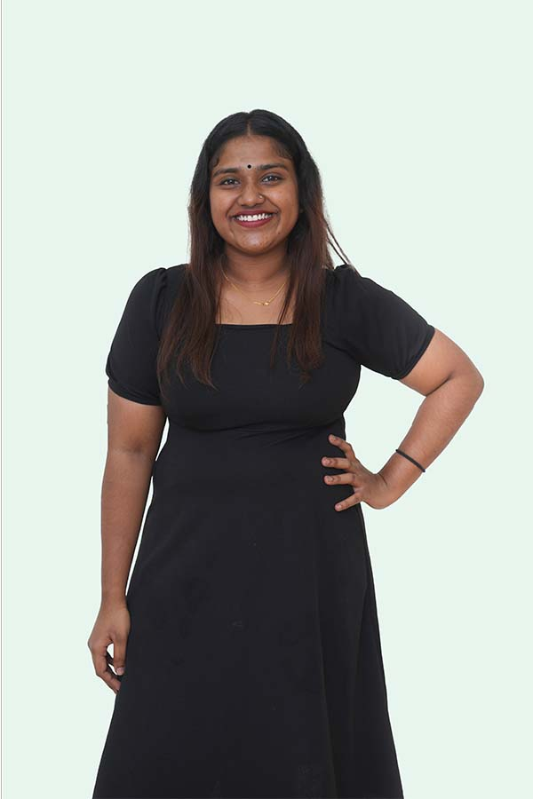
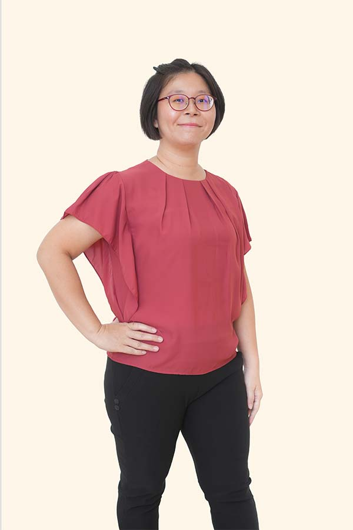
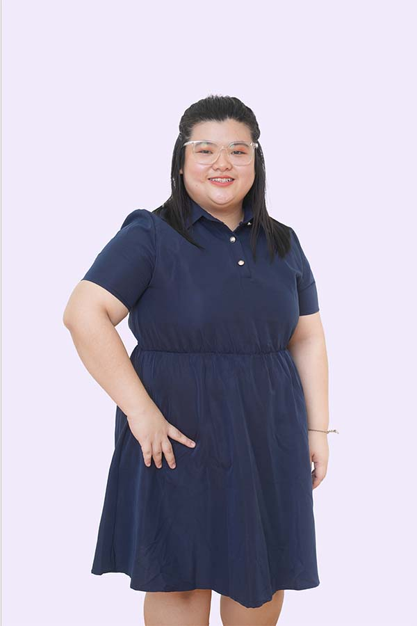
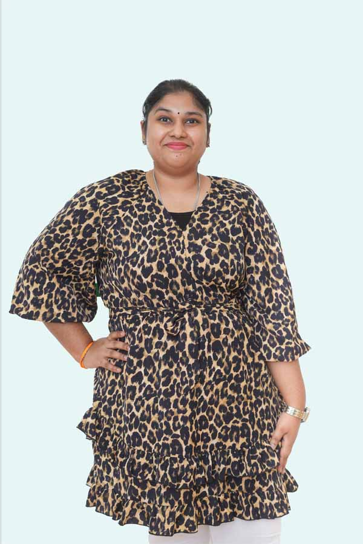
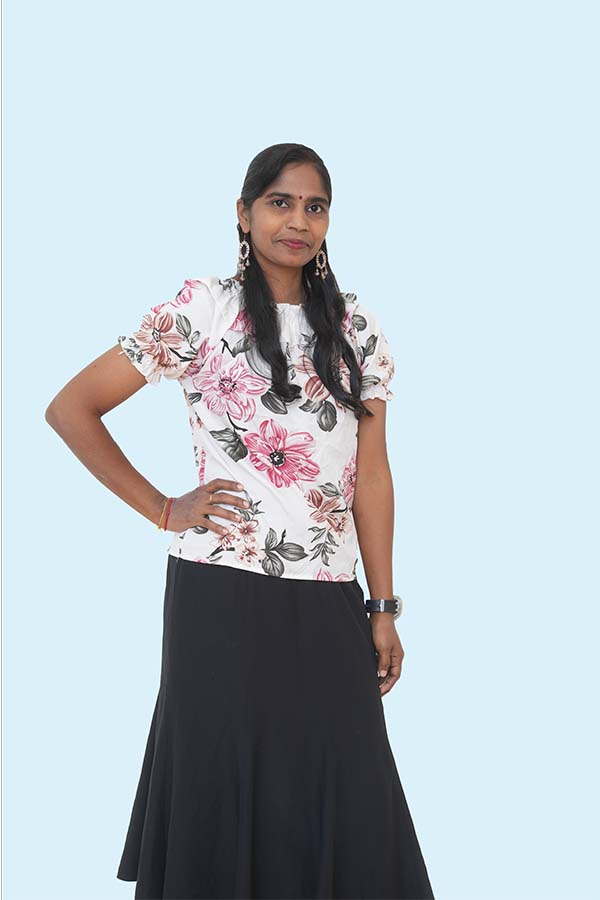

A calm, safe nursery for babies from 6 months old. Our qualified caregivers look after each baby with sensory play, steady routines and lots of cuddles, so you can go to work with peace of mind.
From 6 months
Sensory play

Toddler Class
Toddlers want to do it themselves, so we let them. Hands-on activities build their words, their fine motor skills and their first friendships, at a pace that suits little ones.
1 – 3 years
Play-based learning
Daycare
Pick a half day, 8:30am to 12:30pm, or a full day, 8:00am to 6:00pm. Either way, the day has a steady rhythm of learning, play, meals and rest.
8:30am – 12:30pm
8:00am – 6:00pm

Enrichment Classes
Each month has a new theme. Children cook, paint, get messy and try simple science experiments. It's all in English, so new words come along without anyone noticing.
Thursdays, 5:15–6:30pm
New theme each month
Why parents choose us.
Drop-off
Drop-off
Trust
You'll always know how their day went.
You hand us your child every morning, and we take that seriously. The centre has CCTV, and during the day updates come straight to your phone on Oodlin.

Nap ended, all smiles13:45 · Dreamroom
I am here to make sure every child feels comfortable and happy from the moment they arrive.
Assistant Kala
Morning circle
Morning circle
Kindness
We teach kindness on purpose.
Caring about other people is a skill. Children practise it here every day, the same way they practise letters and numbers.
At Tots, I love chatting with the children, listening to their stories, and watching them grow in confidence.
Principal Janet

Mid-morning
Mid-morning
Curiosity
No question is too small.
Why is the sky blue? Where do ants sleep? Every question gets a proper answer, or a way to go and find one.
I create spaces where curiosity is always encouraged and no question is too small.
Teacher Yong
Afternoon
Afternoon
Growth
Every child grows at their own pace.
We don't rush anyone to keep up with a chart. We help children try new things, pick themselves up when it goes wrong, and see how far they've come.
He has learned and improved so much within just 3 months.
Racheal Chua, parent of Jing Qian
Thursday, 5:15pm
Thursday, 5:15pm
Joy
Messy is allowed.
Art, music, movement and pretend play happen every day. On Thursdays, from 5:15 to 6:30pm, we go further: cooking, painting, messy play and science.
There are only joyful memories when he talks about school.
Yui Wenjia, parent of Ee Chen
The big days
The big days
Belonging
Every family belongs here.
Every child and every family is welcome. We celebrate our differences, and we do it together, like at Family Day and Sports Day 2025 with our friends from Tadika Pelita Ilmuku.
Drop-off
Morning circle
Mid-morning
Afternoon
Thursday, 5:15pm
The big days
What parents have said about us
K
Dear teachers, thank you so much for being so passionate about teaching young children. I cannot thank you enough for your influence on my child's growth and success. Thank you so much for taking such good care of Khavinaya all this while!
Khavinaya's MumParent · via WhatsAppY
A big thank you to all the teachers and assistants for taking such good care of Ee Chen in his preschool journey. There are only joyful memories when he talks about school — not once does he complain about anything. You guys have been doing a really good job! Keep up the great work.
Yui WenjiaParent of Ee Chen · via WhatsAppR
I am so grateful that Tots & Friends allowed Jing Qian to rejoin the class. He has learned and improved so much within just 3 months. I couldn't imagine what it would be like if I had kept him at home without schooling. The teachers here truly make a difference.
“I love chatting with the children, listening to their stories, and watching them grow in confidence.”
“I enjoy travelling, movies, and singing — little things that bring balance to my life. At Tots, I love chatting with the children, listening to their stories, and watching them grow in confidence. I strive to create a warm, safe, and fun environment for every child, and I'm grateful to be part of a place filled with love, care, and positivity.”

Teacher Tan
“Being part of the Tots team means working with children I care about.”
“Outside of school, I enjoy NGO activities, hiking, family time, and playing kabaddi. Being part of the Tots team means working with children I care about, building a fun learning environment, and growing alongside my colleagues.”

Teacher Harinesh
“Tots is where my teaching journey began. I've grown so much since.”
“I enjoy the little moments in life — laughing, creating, and making a positive impact on others. Tots is where my teaching journey began. When I joined in 2023 I had little experience, but I've grown so much since. I'm truly grateful to this school for shaping me into the teacher I am today.”

Teacher Yong
“Children learn through doing, exploring, and sometimes making a beautiful mess.”
“Children learn through doing, exploring, and sometimes making a beautiful mess. I create spaces where curiosity is always encouraged and no question is too small.”

Teacher Xin Hui
“What I value most is the teamwork, open communication, and the time I get to spend with the children.”
“I enjoy quiet moments to relax and recharge. At Tots, what I value most is the teamwork, open communication, and the time I get to spend with the children.”

Teacher Syamila
“The teamwork, guidance, and positive atmosphere here make teaching at Tots a truly meaningful experience.”
“I'm grateful for the opportunity to not only care for children but to actively contribute to their learning and growth. The teamwork, guidance, and positive atmosphere here make teaching at Tots a truly meaningful experience.”

Assistant Kala
“A settled, content child is a child who is ready to learn and explore.”
“I am here to make sure every child feels comfortable and happy from the moment they arrive. A settled, content child is a child who is ready to learn and explore.”
Quick answers
What ages do you accept?
We welcome children from 6 months to 8 years, depending on the programme. See our childcare programmes for infant care, toddler classes, daycare and Thursday enrichment. For kindergarten options for ages 3 to 6, visit Tadika Pelita Ilmuku.
What curriculum or teaching approach do you use?
We draw on Reggio Emilia and Montessori ideas. In practice, children learn through play, hands-on activities and good relationships, and their curiosity sets the direction.
How do you keep children safe?
The centre has CCTV, and during the day you get updates on Oodlin, so you can see how your child's day is going.